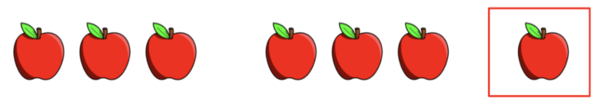
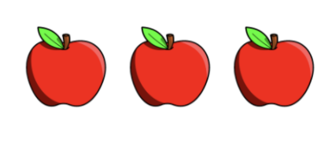
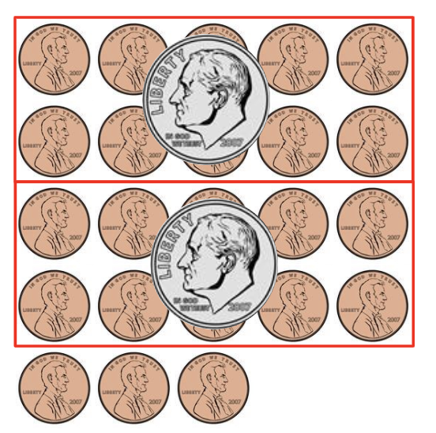

Lesson 8 - Modulus
At the end of this lesson, you will be able to:
- Use the modulus % operator to calculate the remainder of a division operation.
- Design and develop an inches conversion program.
Runestone Academy - Textbook Resource
Read through Section 2.7 from Chapter 2, Simple Python Data from this textbook. This section talks about the different operators including integer division and the modulus operators. Try some programs in the workspace provided in Section 2.7.
Modulus %
In Python, the % symbol is the remainder operator. (This is also known as the modulus operator.) The remainder operator performs division, but instead of returning the quotient, it returns the remainder.
7 // 3 calculates the number of groups of 3 that can be created from 7:

2 groups of 3 can be created with 1 left over
7 % 3 calculates the remainder after groups of 3 are created:

There is 1 remaining after creating groups of 3.
3 // 7 calculates the number of groups of 7 that can be created from 3:

0 groups of 7 can be created from 3 apples.
3 % 7 calculates the remainder after groups of 7 are created:
There are 3 remaining after creating 0 groups of 7 apples.
Modulus % is used to determine if a number is even or odd. Even numbers have a remainder of 0 when divided by 2. Odd numbers have a remainder of 1 when divided by 2. Run the program to see the results (copy from below or download the modulus1.py and run in your IDE of choice):
def main():
print(5 % 2) # Is the number odd? Is the remainder 1?
print(4 % 2) # Is the number even? Is the remainder 0?
main()Modulus is also used to determine if an integer is evenly divisible by another integer. An integer is evenly divisible by another integer if the remainder is 0.
If an integer is divisible by another integer, the remainder is always 0. 9 % 3 is 0 because there is no remainder when 9 is divided by 3. Look at the following and then predict the possible remainders when an integer is divided by 100 :
n % 2 -> 0 and 1 are possible remainders when an integer is divided by 2n % 3 -> 0, 1, and 2 are possible remainders when an integer is divided by 3n % 10 -> 0, 1, 2, 3, 4, 5, 6, 7, 8, and 9 are possible remainders when an integer is divided by 10
Example
Suppose you have a jar full of pennies and you want to reduce the number of coins by exchanging them for the maximum amount of quarters, dimes, nickels, and pennies. We can use division and modulus to figure this out!
Let's start with 48 pennies. We will create a variable, cents, to hold the number of pennies:
cents = 48
It is a good idea to think about all of the variables you will need from the start, we can always add or remove them later. Right now I am thinking we will need to keep track of the number of quarters, dimes, and nickels.
quarters = 0dimes = 0nickels = 0

To minimize the number of coins needed, we will start with the biggest coin, quarter. We will use integer division // to calculate the number of quarters we need or how many groups of 25 pennies can we create:
quarters = cents // 25
It looks like we can create one group of 25 with 23 pennies left over.
We can now subtract the number of pennies we are exchanging for quarters:
cents = cents - (quarters * 25)
But we can also use the modulus % operator to calculate the same result!
cents = cents % 25
The two statements do exactly the same thing, but we will use modulus.

Next, we will calculate the number of dimes. How many groups of 10 can we create out of the remaining 23 pennies:
dimes = cents // 10
We can create 2 groups of 10 with 3 pennies left over. Use the modulus to calculate the number of pennies remaining after we divide by 10:
cents = cents % 10

Complete the program below to calculate the number of quarters, dimes, nickels, and pennies. After your program is working, modify the number of cents to test other values! (Copy from below or download the modulus2.py and run in your IDE of choice.)
def main():
cents = 48 # change this to test different amounts
quarters = 0
dimes = 0
nickels = 0
quarters = cents // 25 # number of quarters
cents = cents % 25 # cents remaining
# add code to calculate dimes, nickels, cents
# print the results
print('Quarters:', quarters)
main()Inches conversion tutorial
Watch the video below which designs and develops a program to convert inches to feet and inches.